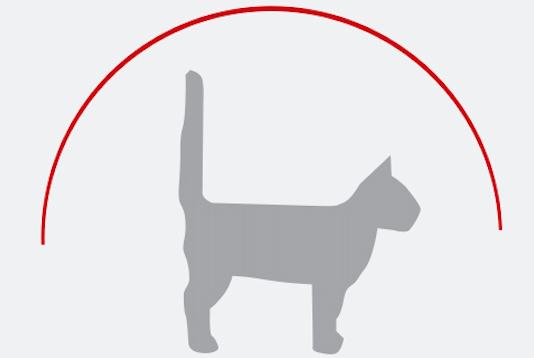
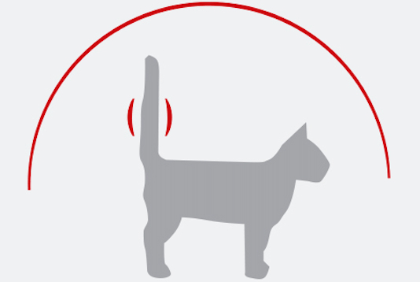
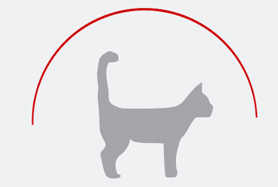
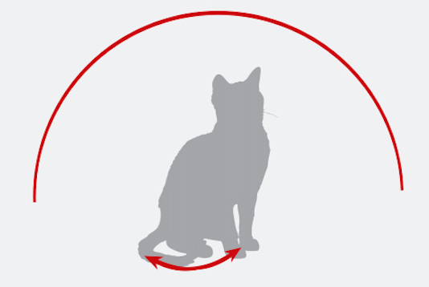
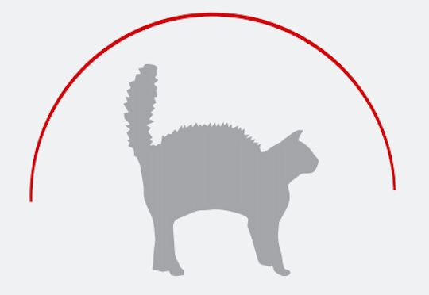

Comportarmiento y lenguaje corporal de tu gato

Amistad - Confianza
- Cola y cabeza levantadas.
- Orejas erguidas.
- Camina desenvuelto y seguro.
El gato esta interesado y dispuesto a jugar.

Interés - Amistad
- Cabeza levantada.
- Orejas erguidas.
- Cola recta en posición vertical y rígida.
El gato siente curiosidad, esta dispuesto a saludarte confiadamente.

Emoción - Alegría
- Cola levantada y en movimiento como vibrando.
El gato esta muy feliz de verte.

Amistad con cierta inseguridad
- Cola levantada de forma recta y enroscándose en la punta.
El gato es amistoso pero puede recelar ligeramente.

Alerta - Interés
- El gato setado, da pequeños golpecitos con el extremo de su cola.
El gato está interesado en algo o en alerta.

Irritable
- El gato sentado, mueve la cola bruscamente y con amplio movimiento.
El gato está irritable, inquieto o hambriento.

Malestar - Enfadado - Temor
- Cola levantada y pelo erizado.
- Cuerpo arqueado.
El gato se siente amenazado y adopta una postura de agresividad defensiva.

Agresividad - Temor
- Cola levantada.
- Pelo erizado.
- Cuerpo arqueado.
- Orejas hacia atrás.
- Actitud corporal defensiva.
- Boca muy abierta y posiblemnte bufando.